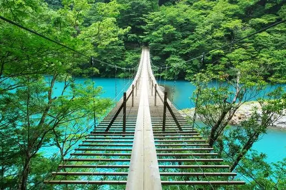
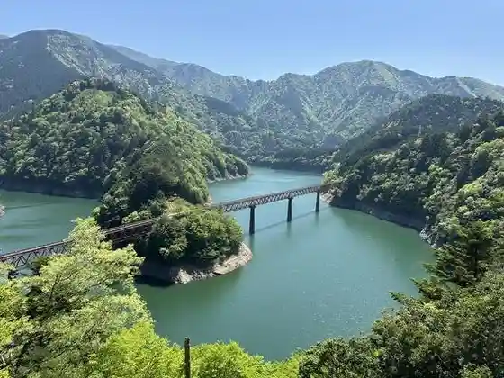
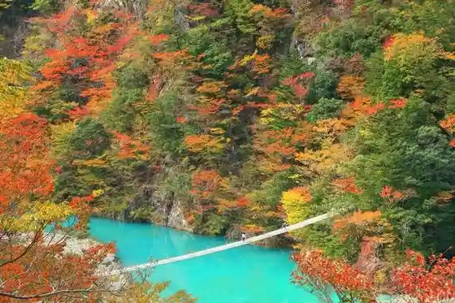
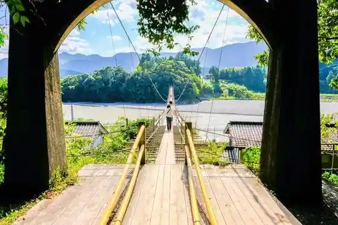
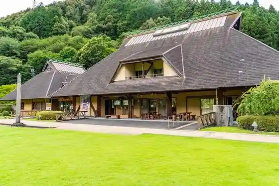

Japan / Shizuoka / Kawanehon
Kawanehon, Shizuoka
Kawanehon · Shizuoka
Kawanehon
Highlighted on the Shizuoka map.

Sights
Yume no Suspension Bridge
Kawanehon, Shizuoka · 0547-59-1011 · Official / source link
Oku Oi Kojo Eki
Kawanehon, Shizuoka · 0547-59-2137 · Official / source link

Sumatakyo
Kawanehon, Shizuoka · 0547-59-2746 · Official / source link

Shio Sato no Tsuribashi
Kawanehon, Shizuoka · 0547-59-2746 · Official / source link

Roadside Station Fore Nakakawane Cha Mei Kan
Kawanehon, Shizuoka · 0547-56-2100 · Official / source link

Fudo Falls
Kawanehon, Shizuoka · 0547-59-2746 · Official / source link
SL Museum
Kawanehon, Shizuoka · 0547-59-2065 · Official / source link
Choei Rotemburo Bijo Zukuri Baths
Kawanehon, Shizuoka · 0547-59-1011 · Official / source link
Yamaga So Chaen
Kawanehon, Shizuoka · 0547-57-2777 · Official / source link
Roadside Station Oku Oi Oto Gi no Sato
Kawanehon, Shizuoka · 090-4182-6773 · Official / source link